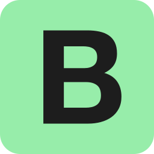

Olá, eu sou Caio Querino
Desenvolvedor Frontend & UI Designer.
Baixar currículoSobre mim
Desenvolvedor Front-End com experiência em criação de interfaces de usuário responsivas e interativas utilizando tecnologias modernas. Proficiente em HTML5, CSS3 e JavaScript e Bootstrap. Apaixonado por entregar soluções e por estar sempre atualizado com as melhores práticas e aprender novas tecnologias do desenvolvimento web. Utilizo ferramentas como Figma para design UI/UX. Além disso, tenho conhecimento em controle de versão com GitHub. Atualmente, estou cursando Superior de Tecnologia em Gestão da Tecnologia da Informação na Unisuam. Busco oportunidades para aplicar e expandir minhas habilidades, contribuindo para o sucesso de projetos inovadores.


Projetos

Serviços

Criação de sites
UI / UX Designer
Sites responsivos
Habilidades


